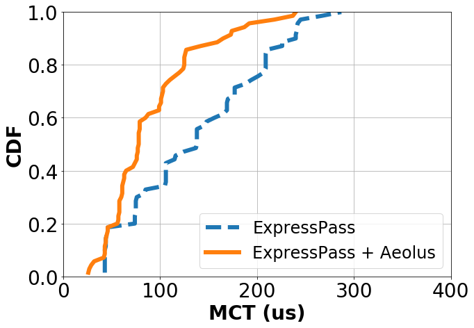

Language: python3
import matplotlib.pyplot as plt
import numpy as np
plt.figure(figsize=(10,7))
plt.xlim([0, 400.1])
plt.ylim([0, 1.00001])
y1, x1 = np.loadtxt('fct_noaeolus_30kb.txt', unpack=True)
plt.plot(x1,y1, label='ExpressPass',linestyle='--',linewidth=6.0)
y2, x2 = np.loadtxt('fct_aeolus_30kb.txt', unpack=True)
plt.plot(x2,y2, label='ExpressPass + Aeolus',linewidth=6.0)
plt.xticks(fontsize=28)
plt.yticks(fontsize=28)
plt.xticks(np.arange(0, 400.1, 100))
plt.yticks(np.arange(0, 1.00001, 0.2))
plt.xlabel('MCT (us)',fontsize=28, fontweight='bold')
plt.ylabel('CDF',fontsize=28, fontweight='bold')
plt.legend(fontsize=24,loc=4)
plt.grid()
plt.show()